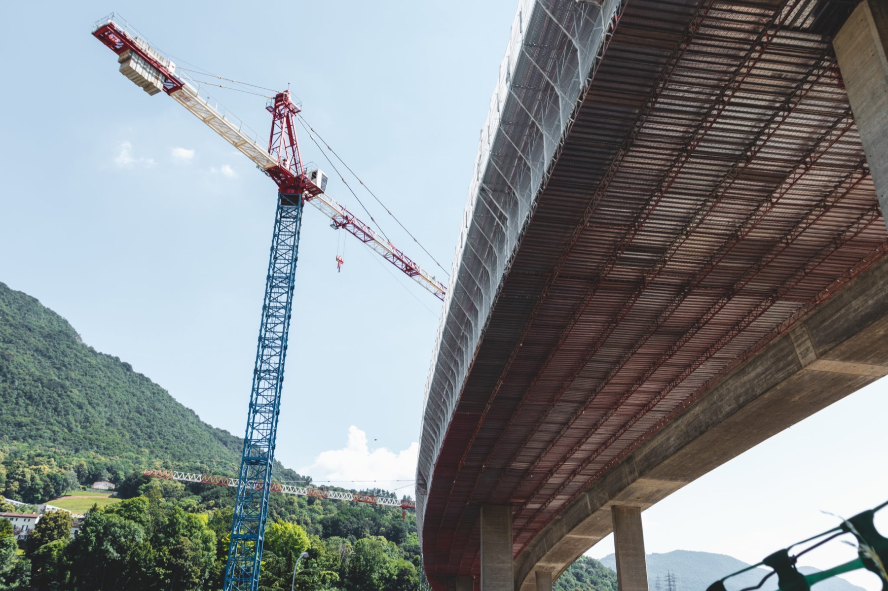
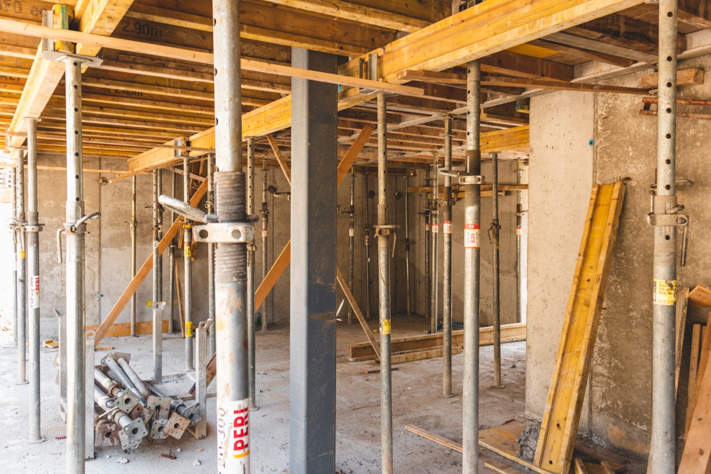
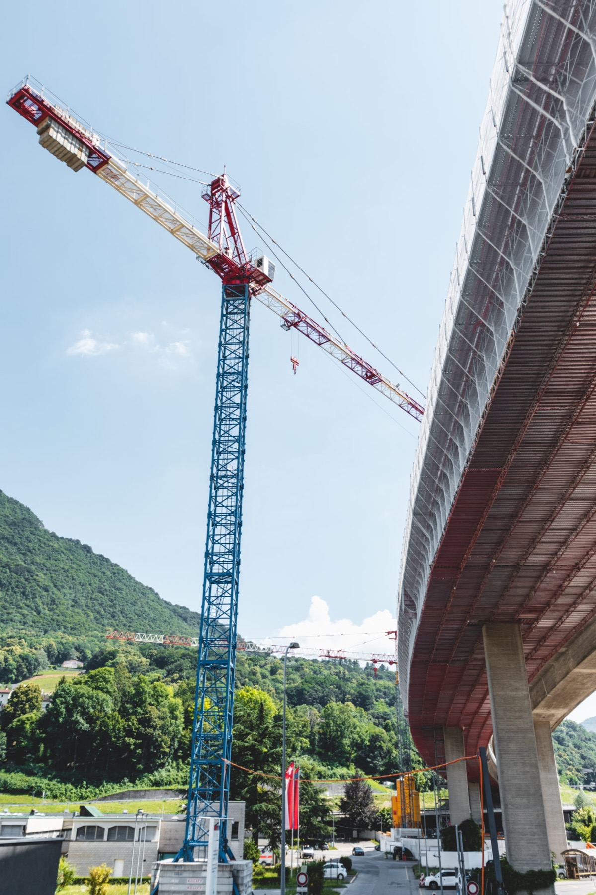
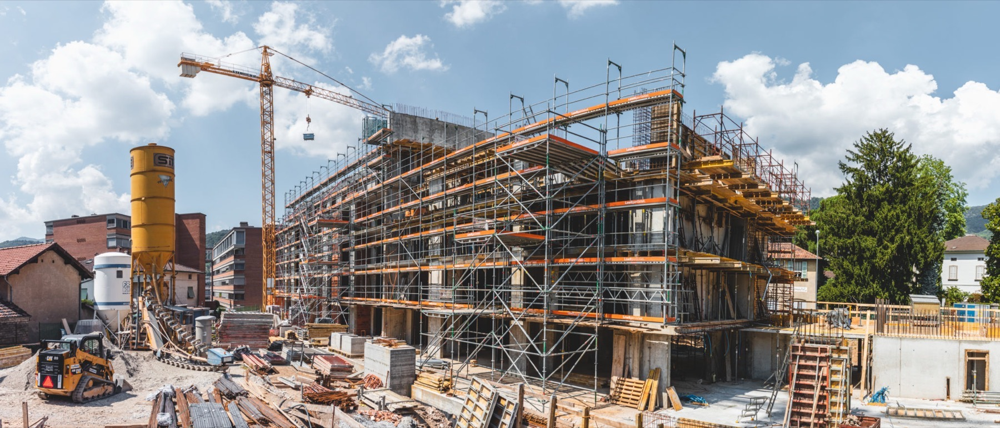
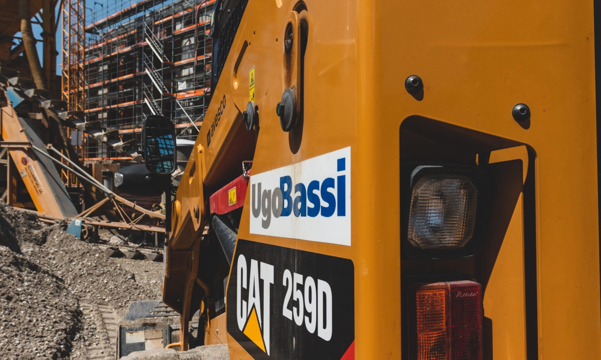
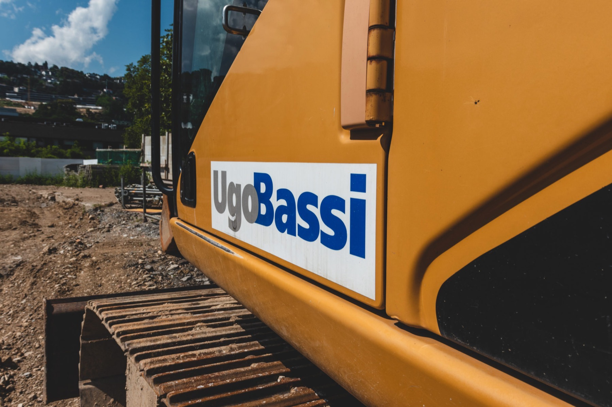

Impresa generale di costruzione · Lugano · dal 1948
Costruiamo nel Luganese dal 1948.
Edilizia, genio civile e lavori specialistici. Un'impresa a conduzione famigliare, con circa 130 collaboratori e un parco macchine proprio.

Genio civile · viadotto con gru a torre
78anni di attività
~130collaboratori
20cantieri attivi ogni anno
4,6/517 recensioni Google
01 · Settori
Tre mestieri, un'impresa generale.
Manodopera altamente specializzata e macchinari all'avanguardia, per garantire alla clientela i massimi standard di qualità.

Costruzioni edili di ogni genere, come impresa generale: studio, progettazione, direzione lavori e ordini, fino alla consegna.
Dagli anni 50 le opere di genio civile sono parte della nostra storia nel Luganese, con macchinari e squadre proprie.
Scavi meccanici con il nostro parco macchine, e reparti specializzati interni al gruppo.
02 · Storia
Tre generazioni di cantieri.
-
1948
4
Il giovane Ugo Bassi fonda a Lugano la ditta individuale Ugo Bassi, impresa di costruzioni, con un organico di 4 operai.
-

Anni 50
Un potenziamento tecnico lungimirante e le prime importanti commesse di genio civile nel Luganese.
-

1988
I figli entrano in azienda. Nasce la Ugo Bassi SA, impresa generale di costruzione edilizia e di genio civile con sede a Lugano.
-

Oggi
Circa 130 collaboratori e 20 cantieri attivi ogni anno, guidati dall'Ing. Lorenzo Bassi.
-
Il gruppo
- Faiko Verniciature Industriali Sagl
- Edilrecycling SA
- Tunesi Prefabbricati di Cemento Sagl
Le società associate, con l'officina, la metalcostruzione, l'impiantistica edile e il riciclaggio di inerti.
03 · Opere
Alcuni lavori in opera.

Foto dal vecchio sito ugobassi.ch. Nomi e luoghi delle opere da completare.
04 · L'impresa
Una famiglia, dal 1948.
La Ugo Bassi è un'azienda a conduzione famigliare attiva in Canton Ticino, specializzata nelle costruzioni edili, del genio civile e dei lavori specialistici. Grazie a una molteplicità di conoscenze operative e a una formazione costante, è simbolo di qualità ed efficienza.
Ing. Lorenzo Bassialla guida della Ugo Bassi SA
- SedeVia Arbostra 35, Pregassona
- FormaSocietà anonima dal 1988
- RepartiOfficina, metalcostruzione, impiantistica edile, riciclaggio di inerti
- OrariLunedì a venerdì, 9.00 alle 17.00
05 · Contatto
Un'opera da realizzare?
- Altri numeri091 941 75 56 · 091 942 35 15
- SedeVia Arbostra 35
6963 Pregassona (Lugano) - OrariLunedì a venerdì, 9.00 alle 17.00
WhatsApp sul numero degli uffici, se attivo.